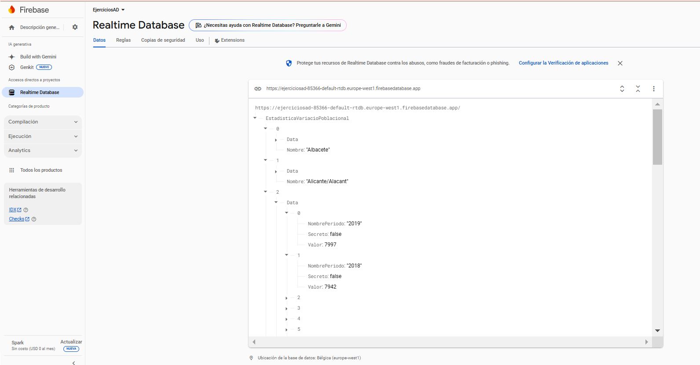
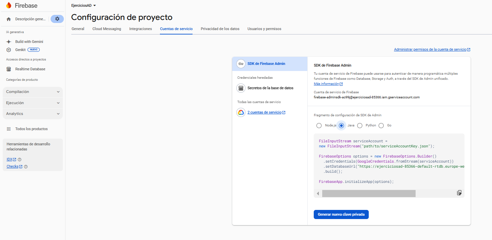
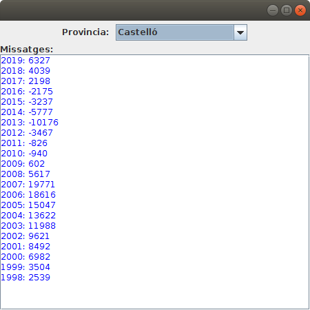
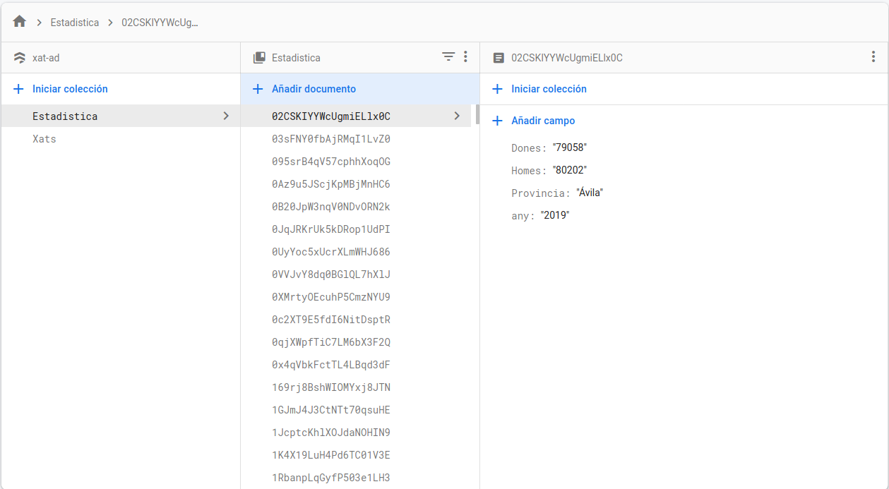
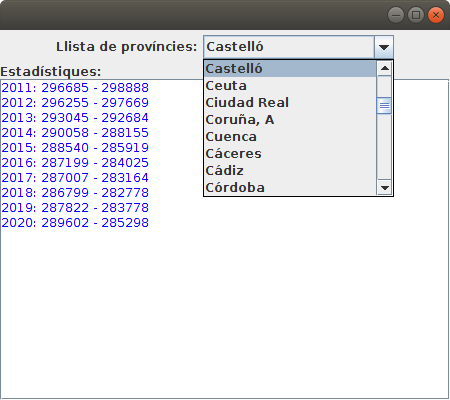

Exercicis
Exercicis
Exercici 1 (Realtime Database)
Farem una aplicació per a agafar unes dades corresponents a unes estadístiques guardades en Realtime Database de Firebase.
Per no haver de substuir les dades que ja teniu, podeu crear-vos un nou projecte, per exemple, ExercicisAD, i en una base de dades RealtimeDatabase importar el fitxer variaciopoblacional.json, al que teniu com un recurs a l'aula virtual.
La informació a la qual volem accedir està en el array EstadisticaVariacioPoblacional amb les províncies, i en cada província tenim el nom (Nombre) i en un array anomenat Data tenim diferents anys amb el número d'any i el valor de la variació de la població:

Podeu utilitzar el "esquelet" que hi ha a continuació. En ell tenim:
- Un JCombobox per a triar la província
- Un JTextArea, per a mostrar les dades de la província triada
Haureu d'incorporar el fitxer json on està la configuració i la clau privada de la connexió.

L'aplicació ha de agafar les províncies (observeu que estan en una llista) i guardar-les en un JComboBox, per a poder triar-les. Quan es trie una província, s'haurà de mostrar en el JTextArea la informació corresponent a la província, agafant tots els anys de l'array Data (observeu que també és una llista) i mostrar l'any i el valor de la variació poblacional (respectivament NombrePeriodo i Valor). No cal agafar tota la EstadisticaVariacioPoblacional. Podeu anar directament a un element de l'array. Per exemple EstadisticaVariacioPoblacional/0/Data fa referència a les dades de la primera província

A continuació teniu l'esquelet del programa que podeu utilitzar, que el podeu guardar en el fitxer Kotlin T8Ex1_EstadisticaRD.kt:
import javax.swing.JFrame
import javax.swing.JLabel
import javax.swing.JComboBox
import javax.swing.JTextArea
import java.awt.BorderLayout
import javax.swing.JPanel
import java.awt.FlowLayout
import java.awt.Color
import javax.swing.JScrollPane
import java.io.FileInputStream
import com.google.firebase.FirebaseOptions
import com.google.auth.oauth2.GoogleCredentials
import com.google.firebase.FirebaseApp
import com.google.firebase.database.*
import java.awt.EventQueue
class EstadisticaRD : JFrame() {
val etProv = JLabel("Provincia: ")
val provincia = JComboBox<String>()
val etiqueta = JLabel("Missatges:")
val area = JTextArea()
init {
defaultCloseOperation = JFrame.EXIT_ON_CLOSE
setBounds(100, 100, 450, 450)
setLayout(BorderLayout())
val panell1 = JPanel(FlowLayout())
panell1.add(etProv)
panell1.add(provincia)
getContentPane().add(panell1, BorderLayout.NORTH)
val panell2 = JPanel(BorderLayout())
panell2.add(etiqueta, BorderLayout.NORTH)
area.setForeground(Color.blue)
area.setEditable(false)
val scroll = JScrollPane(area)
panell2.add(scroll, BorderLayout.CENTER)
getContentPane().add(panell2, BorderLayout.CENTER)
setVisible(true)
val serviceAccount = FileInputStream("path/to/your-credentials.json")
val options = FirebaseOptions.builder()
.setCredentials(GoogleCredentials.fromStream(serviceAccount))
.setDatabaseUrl("https://<your-database-name>").build()
FirebaseApp.initializeApp(options)
// Posar tota la llista de províncies al JComboBox anomenat provincia
provincia.addActionListener() {
// Posar la informació de tots els anys en el JTextArea anomenat area
}
}
}
fun main(args: Array<String>) {
EventQueue.invokeLater {
EstadisticaRD().isVisible = true
}
}
Exercici 2 (Cloud Firestore)
Farem un exercici paregut a l'anterior, però ara les dades estaran guardades en Cloud Firestore, d'una base de dades externa, per tant, haureu d'incorporar el fitxer json on està la configuració i la clau privada de la connexió, al que teniu com un recurs en l'aula virtual: xat-ad-9f901-firebase-adminsdk-f1vja-b8957819d1.json
A la base de dades hi ha una col.lecció, Estadistica, on tindrem un document per cada província i any, amb la població de dones i homes. Per tant, com que hi ha 52 províncies i 10 anys d'estadístiques, tindrem un total de 520 documents.

Com es veu en la imatge, en cada document es guarda: la província, l'any, el número de dones i el número d'homes.
Podeu utilitzar el "esquelet" que hi ha a continuació. En ell tenim:
- Un JCombobox per a triar la província
-
Un JTextArea, per a mostrar les dades de la província triada
-
L'aplicació ha de agafar les províncies per a guardar-les en un JComboBox i poder triar-les, però tenint en compte que eixiran repetides (concretament 10 vegades cada província). Podeu afegir-les a un Mutable Set per a evitar que estiguen repetides, ja que un set es defineix com un conjunt no ordenat de valors que no es poden repetir. Així, si afegim un valor que ja estava, senzillament no el repetirà. Després només haureu d'ordenar aquest set.
- Quan es trie una província, s'haurà de mostrar en el JTextArea la informació corresponent a la província, agafant tots els documents d'aquesta província, i millor ordenar-los per l'any. S'haurà de mostrar aquest any, i el número de dones i d'homes (respectivament any , Dones i Homes)
Aquest seria l'aspecte:

I aquest seria l'esquelet, que podeu guardar amb el nom T8Ex2_EstadisticaCF.kt :
import javax.swing.JFrame
import javax.swing.JLabel
import javax.swing.JComboBox
import javax.swing.JTextArea
import java.awt.BorderLayout
import java.awt.FlowLayout
import javax.swing.JPanel
import java.awt.Color
import javax.swing.JScrollPane
import java.io.FileInputStream
import com.google.firebase.FirebaseOptions
import com.google.auth.oauth2.GoogleCredentials
import com.google.firebase.FirebaseApp
import com.google.firebase.cloud.FirestoreClient
import java.awt.EventQueue
class EstadisticaCF : JFrame() {
val etCombo = JLabel("Llista de províncies:")
val comboProv = JComboBox<String>()
val etiqueta = JLabel("Estadístiques:")
val area = JTextArea()
// en iniciar posem un contenidor per als elements anteriors
init {
defaultCloseOperation = JFrame.EXIT_ON_CLOSE
setBounds(100, 100, 450, 400)
setLayout(BorderLayout())
// contenidor per als elements
val panell1 = JPanel(FlowLayout())
panell1.add(etCombo)
panell1.add(comboProv)
getContentPane().add(panell1, BorderLayout.NORTH)
val panell2 = JPanel(BorderLayout())
panell2.add(etiqueta, BorderLayout.NORTH)
area.setForeground(Color.blue)
area.setEditable(false)
val scroll = JScrollPane(area)
panell2.add(scroll, BorderLayout.CENTER)
getContentPane().add(panell2, BorderLayout.CENTER)
setVisible(true)
val serviceAccount = FileInputStream("xat-ad-9f901-firebase-adminsdk-f1vja-ee7dc206de.json")
val options = FirebaseOptions.builder()
.setCredentials(GoogleCredentials.fromStream(serviceAccount))
.build()
FirebaseApp.initializeApp(options)
val db = FirestoreClient.getFirestore()
// Instruccions per a omplir el JComboBox amb les províncies
// Instruccions per agafar la informació de tots els anys de la província triada
comboProv.addActionListener() {
}
}
}
fun main(args: Array<String>) {
EventQueue.invokeLater {
EstadisticaCF().isVisible = true
}
}
Llicenciat sota la Llicència Creative Commons Reconeixement NoComercial SenseObraDerivada 4.0